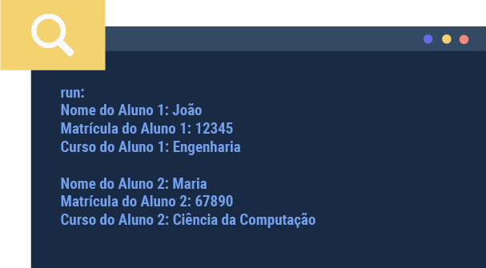
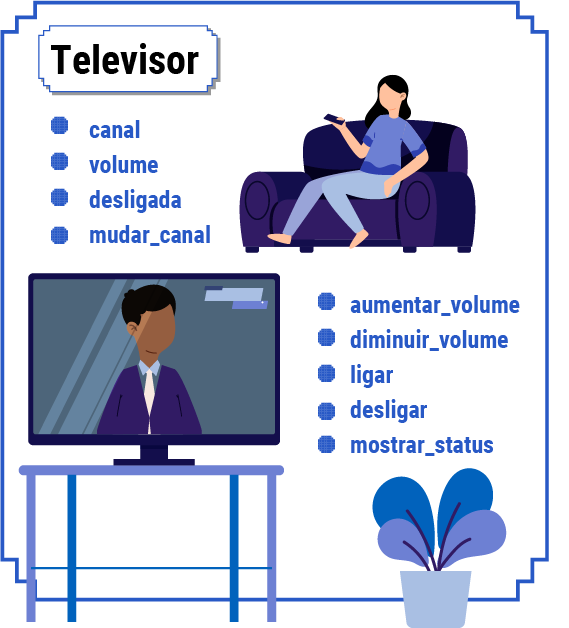

Como sugestão, configure a opção de leitura de caracteres e de pontuação de seu leitor de tela para o grau máximo de leitura, a fim de que os códigos disponibilizados neste material sejam lidos corretamente. No caso do NVDA (Nonvisual Desktop Access), para localizar a opção Grau de pontuação/símbolos, acesse Preferências – Configurações – Fala. Altere o padrão Pouco para Tudo. Dessa forma, o leitor passará a ler os segmentos de código em sua totalidade.
Como já foi citado anteriormente nos conteúdos desta unidade curricular quanto aos conceitos iniciais da POO (programação orientada a objetos), é preciso ver na prática a sua utilização por meio de uma linguagem de programação. Neste momento, a linguagem utilizada para exemplificar os conceitos do paradigma orientado a objetos será o PYTHON, que, apesar de ser uma linguagem multiparadigma (pode ser usada em outros paradigmas da programação, como, por exemplo, o estruturado), é muito poderosa quando utilizada na POO, apresentando diversas vantagens como reutilização do código, facilidade de manutenção e atualização, além de grande capacidade de escalabilidade.
| ALUNO |
|---|
| NOME |
| MATRÍCULA |
| CURSO |
Classe alunos que será implementada no PYTHON
Fonte: Senac EAD (2023)
Você estudou anteriormente que classe é uma abstração, um molde de qualquer elemento do mundo real. Nesta seção do conteúdo, você aprenderá como essa relação acontece dentro de uma linguagem de programação e quais são suas melhores formas de utilização para resolução de problemas do mundo real.
Neste exemplo, semelhante ao visto no conteúdo Orientação a objetos desta unidade curricular, você tem uma classe chamada Aluno, que contém como atributos os elementos Nome do Aluno, Número da Matrícula e Curso.
Sem ainda se preocupar com métodos e outras nomenclaturas dentro da linguagem, conheça mais agora sobre a criação de uma classe, apenas considerando os atributos desta.
Veja, a seguir, uma ideia inicial da criação de classes, com método construtor, em código Python:
class Aluno:
#construtor da classe
def ___init__(self, nome, matricula, curso):
self.nome = nome
self.matricula = matricula
self.curso = curso
Nesse exemplo, foi criada uma classe Aluno com um construtor que inicializa os atributos nome, matrícula e curso quando um objeto Aluno é criado. Ainda não se preocupe com palavras como public e private, que serão posteriormente explicadas no item “Encapsulamento” deste conteúdo.
No código, há uma classe Aluno criada, por meio da palavra reservada “class”, e como atributos estão presentes “nome”, primeiro atributo que é do tipo String (variável tipo texto), um segundo atributo “matricula”, um int (variável do tipo inteiro, números sem vírgula) e como terceiro atributo é utilizado “cpf”, outro String.
É possível analisar outras possibilidades de criação de classes para um melhor entendimento dessa etapa, como mostrado no exemplo a seguir:
| ANIMAL |
|---|
| NOME |
| RAÇA |
| PESO |
Classe animal que será implementada no Python
Fonte: Senac EAD (2023)
Agora será criado o código das classes Animal de acordo com esquematizado.
class Animal:
# Construtor da classe
def __init__(self, nome, raca, peso):
self.nome = nome
self.raca = raca
self.peso = peso
Nesse código, há uma classe Animal, e, como atributos, foram utilizados “nome”, que é uma string; como segundo atributo o item “raca” (sem “ç”, que não se utiliza em nomes de atributos e variáveis), que também é uma string; e, como terceiro atributo, o item “peso”, que é do tipo float (número que aceita vírgula).
Antes do primeiro desafio, entenda como é criado o primeiro projeto no Pycharm, Integrated Development Environment (IDE), em inglês, que pode ser traduzido como “Ambiente de Desenvolvimento Integrado” ou simplesmente “Ambiente de Desenvolvimento” (AD).
Assista ao vídeo a seguir para compreender o passo a passo de criação de um projeto Python no Pycharm.
ESPERA VIDEO
Crie as classes Carro, Celular, Professor e Música, definindo 4 atributos para cada uma delas, primeiramente planeje as classes em uma folha de papel e depois passe para a ferramenta Pycharm, como mostrado nos exemplos anteriores.
class Carro:
def __init__(self, marca, modelo, ano, cor):
self.marca = marca
self.modelo = modelo
self.ano = ano
self.cor = cor
class Celular:
def __init__(self, marca, modelo, sistema_operacional, cor):
self.marca = marca
self.modelo = modelo
self.sistema_operacional = sistema_operacional
self.cor = cor
class Professor:
def __init__(self, nome, disciplina, salario, idade):
self.nome = nome
self.disciplina = disciplina
self.salario = salario
self.idade = idade
class Musica:
def __init__(self, titulo, artista, genero, duracao):
self.titulo = titulo
self.artista = artista
self.genero = genero
self.duracao = duração
Nas classes acima, cada uma possui quatro atributos que representam informações relacionadas ao tipo de objeto correspondente (carro, celular, professor e música). Os atributos são inicializados no método construtor __init__ de cada classe.
Agora será abordada a importância do uso da POO e suas vantagens em relação ao paradigma estruturado de programação. Na linguagem estruturada, utiliza-se uma variável sempre que é necessário armazenar um valor durante o funcionamento do programa e, a cada novo armazenamento, é preciso criar novas variáveis. Na orientação a objetos, por sua vez, é possível criar uma classe e instanciá-la quantas vezes forem necessárias por meio de objetos, de seus atributos e de métodos, o que facilita muito o trabalho do programador quando ele entende como funcionam as particularidades desse tipo de programação
Retornando à primeira classe criada, veja a forma que ela poderia ser utilizada em um programa real.
class Aluno:
#Construtor da classe
def __init__(self, nome, matricula, curso):
self.nome = nome
self.matricula = matricula
self.curso = curso
A partir deste momento, você começará a criar (instanciar) seus primeiros objetos e ver na prática o maravilhoso mundo da orientação a objetos, no qual, por meio de um esqueleto (classe), será possível transformar a abstração em objetos reais. Veja o código a seguir e atente-se aos comentários. Transcreva-o no Pycharm, no arquivo principal (AlunoApp).
#Exemplo de uso da classe
aluno1 = Aluno("João", "12345", "Engenharia")
aluno2 = Aluno("Maria", "67890", "Ciência da Computação")
#Acesso aos atributos do aluno
print("Nome do Aluno 1:", aluno1.nome)
print("Matrícula do Aluno 1:", aluno1.matricula)
print("Curso do Aluno 1:", aluno1.curso)
print("\nNome do Aluno 2:", aluno2.nome)
print("Matrícula do Aluno 2:", aluno2.matricula)
print("Matrícula do Aluno 2:", aluno2.matricula)
print("Curso do Aluno 2:", aluno2.curso)
Depois de rodar esse código, você terá este resultado na tela:
run:
Nome do Aluno 1: João
Matrícula do Aluno 1: 12345
Curso do Aluno 1: Engenharia
Nome do Aluno 2: Maria
Matrícula do Aluno 2: 67890
Curso do Aluno 2: Ciência da Computação
Para melhorar, você criará novos objetos da mesma classe, mostrando que é possível iniciar todos os atributos de uma classe ou apenas os necessários para cada objeto. Por exemplo, é possível criar um objeto “aluno1” com nome, matrícula e CPF, um “aluno2” com nome e matrícula e um objeto “aluno3” somente com CPF, ou seja, você pode instanciar apenas o que precisa para cada um.
Nos exemplos a seguir, será instanciado mais de um objeto da mesma classe. Atente-se ao código e aos comentários contidos nele.
#Criação do Objeto aluno1
aluno1 = Aluno("João", "12345", "Engenharia")
#Criação do Objeto aluno2
aluno2 = Aluno("Maria", "67890", "Ciência da Computação")
#Acesso aos atributos do aluno1
print("Nome do Aluno 1:", aluno1.nome)
print("Matrícula do Aluno 1:", aluno1.matricula)
print("Curso do Aluno 1:", aluno1.curso)
#Acesso aos atributos do aluno2
print("\nNome do Aluno 2:", aluno2.nome)
print("Matrícula do Aluno 2:", aluno2.matricula)
print("Curso do Aluno 2:", aluno2.curso)
#Criação do Objeto aluno3
aluno3 = Aluno('Pedro',485884,"Análise e Desenvolvimento de Sistemas")
#Acesso aos atributos do aluno3
print("\nNome do Aluno 3:", aluno3.nome)
print("Matrícula do Aluno 3:", aluno3.matricula)
print("Curso do Aluno 3:", aluno3.curso)
#alteração de dados do Objeto aluno3
aluno3.nome="Pedro Antônio"
aluno3.matricula=2023023
#Acesso aos atributos do aluno3
print("\nNome do Aluno 3:", aluno3.nome)
print("Matrícula do Aluno 3:", aluno3.matricula)
print("Curso do Aluno 3:", aluno3.curso)
Após rodar esse código, você terá este resultado na tela:
run:
Mostrar Alunos:
Nome do aluno1: Celso Medeiros
Matrícula do aluno1: 1
CPF do aluno1: 00134578090
Nome do aluno2: Camila Alves
Matrícula do aluno2: 2
CPF do aluno3: 0019007890
BUILD SUCCESSFUL (total time: 0 seconds)
Nome do Aluno 1: João
Matrícula do Aluno 1: 12345
Curso do Aluno 1: Engenharia
Nome do Aluno 2: Maria
Matrícula do Aluno 2: 67890
Curso do Aluno 2: Ciência da Computação
Nome do Aluno 3: Pedro
Matrícula do Aluno 3: 485884
Curso do Aluno 3: Análise e Desenvolvimento de Sistemas
Nome do Aluno 3: Pedro Antônio
Matrícula do Aluno 3: 2023023
Curso do Aluno 3: Análise e Desenvolvimento de Sistemas
Process finished with exit code 0
Os métodos são uma das partes mais importantes de um objeto. Eles são o local no qual acontecem as ações do objeto e devem, entre outras coisas, ser utilizados para fazer cálculos, comparações, ordenações etc.
Um método pode ou não retornar um valor, dependendo de como foi configurado. A seguir, ficará demonstrada a forma de utilização dessa poderosa etapa da POO.
Para exemplificar o uso dos métodos, será resgatada a classe Aluno, mas agora com mais um atributo chamado “idade”, deixando a classe com a seguinte configuração:
| ALUNO |
|---|
| NOME |
| MATRÍCULA |
| CURSO |
| IDADE |
Classe Aluno, na qual serão criados os métodos
Fonte: Senac EAD (2023)
Antes de implementar o primeiro método, é importante relembrar e um conhecimento já aprendido durante o curso, que são as funções, pois elas têm algumas semelhanças importantes com os métodos na POO. Para fazer esta comparação, analise a função calcularMedia().
# Definindo uma função para calcular a média de duas notas
def calcular_media(nota1, nota2):
# Soma as duas notas
soma = nota1 + nota2
# Calcula a média dividindo a soma pelo número de notas (2)
media = soma / 2
return media
# Função principal para receber as notas do aluno e calcular a média
def main():
print("Calculadora de Média de Notas")
nome_aluno = input("Digite o nome do aluno: ")
nota1 = float(input("Digite a primeira nota: "))
nota2 = float(input("Digite a segunda nota: "))
# Chama a função calcular_media para obter o resultado
media = calcular_media(nota1, nota2)
# Exibe a média com duas casas decimais
print(f"A média das notas do aluno {nome_aluno} é: {media:.2f}")
#verifica para chamar função main
if __name__ == "__main__":
main()
Nesse programa, para começar, foi definida uma função chamada calcular_media, que aceita duas notas como argumentos, soma as notas e calcula a média. Em seguida, há uma função principal chamada main, que solicita ao usuário as notas do aluno, chama a função calcular_media e exibe o resultado.
Podemos ver que na função somar recebe dois parâmetros do tipo real, o primeiro chamado “valor1” e o segundo chamado “valor2”, dentro da função é criado uma variável chamada resultado que recebe o cálculo da média entre as duas notas recebidas e retorna este resultado ao programa.
Essa forma de programação é muito semelhante com a qual veremos nos métodos criados com passagem de parâmetro, que da mesma forma agiliza o código e reutilização dele, porém com a diferença que nos métodos muitas vezes o valor dos atributos dos objetos é modificado quando esta chamada é feita. Por exemplo se o caso acima fosse um método e o mesmo tivesse um atributo resultado, a partir deste momento o valor deste atributo poderia já se tornar “3,5”, resultado do exemplo acima.
Para rodar o programa, você pode copiá-lo e colá-lo em um ambiente Python, como o IDLE, ou em um script Python, e seguir as instruções para inserir as notas do aluno e vê-las.
Nas próximas linhas de códigos, você começará a implementação dos métodos e descobrirá as incríveis vantagens de sua utilização. Atente-se aos comentários.
#definição da Classe aluno e do construtor __init__
class Aluno:
def __init__(self, nome, matricula, cpf, data_nascimento):
self.nome = nome
self.matricula = matricula
self.cpf = cpf
self.data_nascimento = data_nascimento
# define método listarAluno para os objetos da classe
def listarAluno(self):
print("Nome: ", self.nome)
print("Matrícula: ", self.matricula)
print("CPF: ", self.cpf)
print("Data de Nascimento: ", self.data_nascimento)
print("------------------------")
# Exemplos de criação de objetos Aluno
aluno1 = Aluno("João Silva", "12345", "123.456.789-00", "01/01/2000")
aluno2 = Aluno("Maria Souza", "67890", "987.654.321-00", "15/03/1999")
aluno3 = Aluno("Pedro Santos", "54321", "111.222.333-44", "30/07/2001")
# Chamar o método listarAluno para cada objeto
aluno1.listarAluno()
aluno2.listarAluno()
aluno3.listarAluno()
Nesse exemplo, foi criada a classe Aluno com um construtor __init__ para inicializar os atributos. Em seguida, definiu-se o método listarAlunos para exibir informações dos objetos alunos. Depois, foram criados três objetos da classe Aluno (aluno1, aluno2 e aluno3). Finalmente, foi chamado o método listarAlunos para listar as informações de cada objeto aluno criado.
O resultado da execução será algo como o exemplo a seguir:
Matrícula: 12345
CPF: 123.456.789-00
Data de Nascimento: 01/01/2000
------------------------
Nome: Maria Souza
Matrícula: 67890
CPF: 987.654.321-00
Data de Nascimento: 15/03/1999
------------------------
Nome: Pedro Santos
Matrícula: 54321
CPF: 111.222.333-44
Data de Nascimento: 30/07/2001
------------------------
Process finished with exit code 0
Nota: nos nomes dos métodos utilizamos o padrão da linguagem chamado “CamelCase” onde deixamos em maiúsculo a primeira letra de cada palavra (de um termo composto), com exceção do primeiro termo, como por exemplo o método “mostrarmaiornota”, fica “mostrarMaiorNota”, facilitando a leitura e padrão de criação.
Analisando o código, note que as duas linhas de código mostradas em seguida retornaram o mesmo valor. Talvez você se pergunte, na primeira vez em que se deparar com um código desse, “por que utilizar métodos se posso simplesmente usar a segunda linha de código para mostrar um atributo de um objeto?”. A resposta torna-se mais simples a cada exemplo de utilização dos métodos analisado, mas saiba de antemão que, com o uso dos métodos, o código fica mais organizado, enxuto, reutilizável e seguro. Em seguida, note também que, cada vez que quiser chamar o nome de um aluno, você utilizará aluno.mostrarNome() e não precisará escrever a linha de código maior aprendida anteriormente.
#chamada do método mais fácil
aluno1.listarAluno()
#forma anterior sem o uso do método
print("Nome: ", aluno1.nome)
print("Matrícula: ", aluno1.matricula)
print("CPF: ", aluno1.cpf)
print("Data de Nascimento: ", aluno1.data_nascimento)
print("------------------------")
Utilizando o código exemplificado, crie um método para mostrar nome e cpf e outro método para mostrar nome e idade do aluno. Use como base o método listarAluno(), sempre utilizando verbos para os nomes dos métodos.
Para adicionar dois métodos à classe Aluno, um para mostrar o nome e CPF do aluno e outro para mostrar o nome e idade do aluno, você pode criar os seguintes métodos:
from datetime import datetime
class Aluno:
def __init__(self, nome, matricula, cpf, data_nascimento):
self.nome = nome
self.matricula = matricula
self.cpf = cpf
self.data_nascimento = data_nascimento
def listarAluno(self):
print("Nome: ", self.nome)
print("Matrícula: ", self.matricula)
print("CPF: ", self.cpf)
print("Data de Nascimento: ", self.data_nascimento)
print("------------------------")
def mostrar_nome_e_cpf(self):
print("Nome: ", self.nome)
print("CPF: ", self.cpf)
def mostrar_nome_e_idade(self):
#Calcular a idade com base na data de nascimento
data_nascimento = datetime.strptime(self.data_nascimento, '%d/%m/%Y')
hoje = datetime.now()
idade = hoje.year - data_nascimento.year - ((hoje.month, hoje.day) < (data_nascimento.month, data_nascimento.day))
print("Nome: ", self.nome)
print("Idade: ", idade)
#Exemplos de criação de objetos Aluno
aluno1 = Aluno("João Silva", "12345", "123.456.789-00", "01/01/2000")
aluno2 = Aluno("Maria Souza", "67890", "987.654.321-00", "15/03/1999")
aluno3 = Aluno("Pedro Santos", "54321", "111.222.333-44", "30/07/2001")
# Chamar o método listarAluno para cada objeto
aluno1.listarAluno()
aluno2.listarAluno()
aluno3.listarAluno()
# Chamar o método mostrar_nome_e_cpf para cada objeto
aluno1.mostrar_nome_e_cpf()
aluno2.mostrar_nome_e_cpf()
aluno3.mostrar_nome_e_cpf()
# Chamar o método mostrar_nome_e_idade para cada objeto
aluno1.mostrar_nome_e_idade()
aluno2.mostrar_nome_e_idade()
aluno3.mostrar_nome_e_idade()
Nesse exemplo, os métodos mostrar_nome_e_cpf e mostrar_nome_e_idade foram adicionados à classe Aluno. O método mostrar_nome_e_cpf imprime o nome e o CPF do aluno, enquanto o método mostrar_nome_e_idade calcula a idade do aluno com base na data de nascimento e imprime o nome e a idade.
Pense em uma situação em que, querendo uma descrição completa de um aluno, você conseguisse com apenas uma linha de código apresentar o nome dele, sua matrícula, seu CPF e sua idade. Isso seria possível?
Começaremos instanciando alguns objetos e mostrando as informações completas dele, primeiro sem utilizar métodos e depois com sua utilização.
Outra forma de usar os métodos é quando necessita-se utilizar a passagem de valores através dos atributos da classe, para calcular algo que será retornado como resposta. Para esse exemplo, será modificada a configuração da classe aluno para focar em atributos necessários ao cálculo da média de um aluno, e o escopo da classe agora será o seguinte:
| ALUNO |
|---|
| NOME |
| NOTA1 |
| NOTA2 |
| MÉDIA |
Classe Aluno com argumentos modificados
Fonte: Senac EAD (2022)
Nessa classe, foram modificados os atributos, tendo dois métodos iniciais: um para descrever nome, nota1 e nota 2 do aluno e outro para calcular a média. Em seguida, criamos dois objetos da classe Aluno (aluno1 e aluno2) com suas respectivas notas. Usamos o método listar_dados para listar as informações dos alunos, incluindo a média calculada com base nas notas fornecidas.
Além disso, há um método chamado atualizar_notas na classe Aluno, que recebe duas novas notas como parâmetros e atualiza as notas do aluno, recalculando também a média. O método atualizar_notas é chamado para modificar as notas do aluno1 e, em seguida, o método listar_dados é usado para listar os dados atualizados do aluno.
Veja um exemplo de saída na Console.
Dados aluno 1 ANTES da alteração:
Nome: João Silva
Nota 1: 8.5
Nota 2: 7.5
Média: 8.0
------------------------
Dados aluno 1 DEPOIS da alteração:
Nome: João Silva
Nota 1: 9.0
Nota 2: 9.5
Média: 9.25
------------------------
Process finished with exit code 0
Esse exemplo demonstra como você pode criar métodos que aceitam parâmetros para realizar ações específicas em objetos de uma classe. Observação: pode-se usar o método calcular_media independentemente do método construtor, como forma de calcular e ver a nota do aluno.
Primeiramente, será criado um objeto Aluno e, em seguida, chamado o método calcular_media para calcular a média com base nas notas fornecidas que estão no objeto.
#Exemplo de criação de um objeto Aluno
aluno1 = Aluno("João Silva", 8.5, 7.5)
#Chamar o método calcular_media para calcular a média do objeto aluno1 e atribui o valor calculado à variável media_do_aluno1
media_do_aluno1 = aluno1.calcular_media()
# Imprimir a média calculada
print("A média do aluno 1 é:", media_do_aluno1)
Nesse exemplo, foi criado um objeto aluno1 com as notas 8.5 e 7.5. Em seguida, chamou-se o método calcular_media para calcular a média do aluno. O resultado é impresso na tela.
Dessa forma, o método calcular_media permite calcular a média do aluno com base nas notas armazenadas nos atributos nota1 e nota2, que é útil para obter a média de um aluno específico criado a partir da classe Aluno.
A grande vantagem de usar métodos é que, analisando o exemplo, é possível instanciar uma turma de, por exemplo, 40 alunos com suas notas, e apenas com os métodos listar_dados() e calcular_media(), é possível detalhar as informações de cada aluno, sem ter que reescrever todos os dados e o cálculo de média para cada aluno individualmente.
Outra análise importante desse formato de programação é a sua escalabilidade. Imagine um projeto em que é necessário inserir outras possibilidades, como, por exemplo, um método para mostrar qual a maior nota de aluno e outro método para mostrar se o aluno foi aprovado ou reprovado, conforme a média for maior ou igual a 7. Em um paradigma estruturado, seria necessário fazer esse cálculo individual para cada aluno. Nesse caso, serão criados dois métodos que resolverão o problema, independentemente do número de alunos de uma turma.
Abaixo do método >calcular_media(), da classe Aluno, serão criados os métodos maior_nota() e situação(), o primeiro mostrará a maior nota do aluno e o segundo se ele foi aprovado ou reprovado, conforme suas duas notas apresentadas.
def maior_nota(self):
return max(self.nota1, self.nota2)
def situacao(self):
if self.media >= 6.0:
return "Aprovado"
else:
return "Reprovado"
# Exemplo de criação de um objeto Aluno
aluno1 = Aluno("João Silva", 8.5, 7.5)
# Chamar o método maior_nota para obter a maior nota do aluno
maior_nota_aluno1 = aluno1.maior_nota()
# Imprimir a maior nota
print("Maior nota do aluno 1:", maior_nota_aluno1)
# Chamar o método situacao para determinar se o aluno foi aprovado ou reprovado
situacao_aluno1 = aluno1.situacao()
# Imprimir a situação do aluno
print("Situação do aluno 1:", situacao_aluno1)
Neste código, foram adicionados dois métodos à classe Aluno:
Os métodos têm um grande poder sobre o objeto, podendo modificar o valor de seus atributos, e em outros casos, apenas retornando uma mensagem sem modificar os valores dos atributos dos objetos. Por exemplo, a classe calcular_media(), que, nesse caso, retorna o valor do cálculo da média do aluno.
Note que foi mostrado o resultado para dois alunos, para exemplificar situações em que os alunos foram aprovados ou reprovados. Para criar essa situação para 40 alunos, bastaria instanciar os 40 objetos com seus valores de atributos e chamar os métodos listar_dados, calcular_media, maior_nota e situação.
Para instanciar 40 objetos, seria possível fazer:
class Aluno:
def __init__(_self, nome, nota1, nota2):
self.nome = nome
self.nota1 = nota1
self.nota2 = nota2
self.media = self.calcular_media()
def calcular_media(self):
return (self.nota1 + self.nota2)/2
def atualizar_notas(self,nova_nota1, nova_nota2):
self.nota1 = nova_nota1
self.nota2 = nova_nota2
self.media = self.calcular_media()
def listar_dados(self):
print("Nome: ",self.nome)
print("Nota 1: ",self.nota1)
print("Nota 2: ",self.nota2)
print("Média: ",self.media)
print("------------------------")
def maior_nota(self):
return max(self.nota1, self.nota2)
def situacao(self):
if (self.media >= 6.0:
return "Aprovado"
else:
return "Reprovado"
# Lista para armazenar os objetos Aluno
alunos = []
# Criar 40 objetos Aluno e adicioná-los à lista
for i in range(1,41):
nome = input("Digite o nome do aluno " + str(i) + ":")
nota1 = float(input("Digite nota 1 do aluno " + nome + ":"))
nota2 = float(input("Digite nota 2 do aluno " + nome + ":"))
#criação do objeto aluno
aluno = Aluno(nome, nota1, nota2)
#adiciona objeto a lista alunos
alunos.append(aluno)
#Listar os dados de todos os alunos
for aluno in alunos:
aluno.listar_dados()
Nesse código, foi criada uma lista vazia chamada alunos=[] para armazenar os objetos Aluno. Usou-se um loop for para criar 40 objetos Aluno com nomes e suas respectivas notas informadas nos respectivos comandos input, nas variáveis nome, nota1 e nota2. Na sequência, é criado um objeto e adicionado à lista alunos. Em seguida, usou-se outro loop for para listar os dados de todos os alunos na lista. Isso permite que você inicialize e acesse os dados de 40 objetos da classe Aluno de forma automatizada
Veja, em outro exemplo, um programa PYTHON que possui uma classe que simula as operações de um televisor. Considere que a TV pode ligar, desligar, trocar de canal e alterar o volume do som. Os canais podem ir de 2 a 13 (os canais VHF) e o volume do som de 0 a 100. Essas operações só podem ser realizadas com a TV ligada.

Diagrama UML para a classe Televisor
Fonte: Senac EAD (2024)
| Televisor |
|---|
|
Classe com o título “Televisor”, com os atributos do canal: byte, volume: short, ligada: boolean. Métodos mudar_canal, aumentar_volume, diminuir_volume, ligar, desligar e mostrar_status.
class Televisor
def __init__(self):
self.canal = 2 # Inicializa no canal 2
self.volume = 2 # Inicializa com volume 0
self.ligada = false # Inicializa desligada
def ligar(self):
self.ligada = True
def desligar(self):
self.ligada = False
def mudar_canal(self,novo_canal):
if self.ligada and 2 <= novo_canal <= 13;
self.canal = novo_canal
else
print("O televisor está desligado ou o canal não está disponível.")
def aumentar_volume(self):
if self.ligada and self.volume < 100
self.volume += 1
def diminuir_volume(self):
if self.ligada and self.volume > 0
self.volume -= 1
def mostrar_status(self):
status = "Ligada" if self.ligada else "Desligada"
print("----------------------")
print("f"Status: {status}")
print("f"Canal: {self.canal}")
print("f"Volume: {self.volume}")
print("------------------------")
# Função para exibir o menu
def exibir_menu():
print("Digite uma operação para o Televisor:")
print("[L] Ligar")
print("[D] Desligar")
print("[T] Trocar canal")
print("[+] Aumentar volume")
print("[-] Diminuir volume")
print("[X] Sair")
# Função principal
def main():
televisor = Televisor()
televisor.mostrar_status()
while True:
exibir_menu()
opcao = input("Escolha uma opção: ").upper()
if opcao == 'L':
televisor.ligar()
elseif opcao == 'D':
televisor.desligar()
elseif opcao == 'T':
novo_canal = int(input("Digite o novo canal: "))
elseif opcao == '+':
televisor.aumentar_volume()
elseif opcao == '-':
televisor.diminuir_volume()
elseif opcao == 'x':
break
else :
print("Opção inválida. Tente novamente.")
televisor.mostrar_status()
if __name__ == "__main__":
main()
Nesse programa, há a classe Televisor com os métodos para ligar, desligar, mudar canal e aumentar volume. O televisor começa desligado por padrão, e todas as operações (mudar canal e aumentar volume) só podem ser realizadas quando o televisor está ligado. O programa também inclui um método mostrar_status para exibir o status atual do televisor.
O programa tem uma função exibir_menu para exibir o menu de opções e uma função main que contém um loop que permite ao usuário interagir com o televisor. O usuário pode escolher as opções do menu e, com base na escolha, as operações apropriadas são realizadas no televisor. O loop continua até que o usuário escolha a opção de sair (digitar 'X').
Esse exemplo demonstra como utilizar a classe Televisor para realizar operações de controle de canal e volume em um televisor simulado. Certifique-se de que o televisor esteja ligado antes de fazer qualquer alteração no canal ou volume.
Altere a classe Televisor do exemplo acima e inclua um método “display()”, que mostra na tela o canal e o volume atuais se a TV estiver ligada.
class Televisor
def __init__(self):
self.canal = 2 # Inicializa no canal 2
self.volume = 2 # Inicializa com volume 0
self.ligada = false # Inicializa desligada
def ligar(self):
self.ligada = True
def desligar(self):
self.ligada = False
def mudar_canal(self,novo_canal):
if self.ligada and 2 <= novo_canal <= 13;
self.canal = novo_canal
else
print("O televisor está desligado ou o canal não está disponível.")
def aumentar_volume(self):
if self.ligada and self.volume < 100
self.volume += 1
def diminuir_volume(self):
if self.ligada and self.volume > 0
self.volume -= 1
def mostrar_status(self):
status = "Ligada" if self.ligada else "Desligada"
print("----------------------")
print("f"Status: {status}")
print("f"Canal: {self.canal}")
print("f"Volume: {self.volume}")
print("------------------------")
def display(self):
if self.ligada:
print(f"Canal: {self.canal}")
print(f"Canal: {self.volume}")
# Função para exibir o menu
def exibir_menu():
print("Digite uma operação para o Televisor:")
print("[L] Ligar")
print("[D] Desligar")
print("[T] Trocar canal")
print("[+] Aumentar volume")
print("[-] Diminuir volume")
print("[X] Sair")
# Função principal
def main():
televisor = Televisor()
televisor.mostrar_status()
while True:
exibir_menu()
opcao = input("Escolha uma opção: ").upper()
if opcao == 'L':
televisor.ligar()
elseif opcao == 'D':
televisor.desligar()
elseif opcao == 'T':
novo_canal = int(input("Digite o novo canal: "))
elseif opcao == '+':
televisor.aumentar_volume()
elseif opcao == '-':
televisor.diminuir_volume()
elseif opcao == 'x':
break
else :
print("Opção inválida. Tente novamente.")
televisor.mostrar_status()
if __name__ == "__main__":
main()
Crie uma classe chamada calculadora que tenha os atributos valor1, valor2 e operação, e um método calcular() que deve retornar o resultado conforme os valores e operação escolhidos, as operações serão “+” para adição, “-“ para subtração, “*” para multiplicação e “/” para divisão.
class Calculadora:
def __init__(self, valor1, valor2, operacao):
self.valor1 = valor1
self.valor2 = valor2
self.operacao = operacao
def calcular(self):
if self.operacao == "+":
returnself.valor1 + self.valor2
elseif self.operacao == "-":
returnself.valor1 - self.valor2
elseif self.operacao == "*":
returnself.valor1 * self.valor2
elseif self.operacao == "/":
ifself.valor2 == 0:
return "Erro: Divisão por zero"
else
return self.valor1 / self.valor2
else
return "Operação inválida"
# Função para exibir o menu
def exibir_menu():
print("Escolha a operação:")
print("[+] Soma")
print("[-] Subtração")
print("[*] Multiplicação")
print("[/] Divisão")
print("[x] Sair")
# Função principal
def main():
while True:
exibir_menu()
operacao = input("Digite a operação desejada: ")
if operacao == 'x':
break
try
valor1 = float( input("Digite o primeiro valor: "))
valor2 = float( input("Digite o segundo valor: "))
except ValueError:
print("Valores inválidos. Tente novamente.")
continue
calculadora = Calculadora(valor1,valor2,operacao)
resultado = calculadora.calcular()
print(f"Resultado da operação: {valor1} {operacao} {valor2} = {resultado}")
if __name__ == "__main__":
main()
Python, em relação a outras linguagens orientadas a objetos, por exemplo, Python, tem abordagens diferentes em relação aos tipos primitivos e de referência. Em Python, todos os tipos de dados são objetos, o que significa que eles são armazenados como objetos, incluindo números inteiros, flutuantes, strings e outros tipos “simples”. Python também permite que você crie suas próprias classes (tipos de referência) com atributos e métodos personalizados, como visto até aqui.
Python faz uso extenso de objetos e referências, e a distinção entre tipos primitivos e de referência não é tão pronunciada quanto em Python. No entanto, essa diferença na abordagem de tipos não é tão visível no código Python do dia a dia, pois Python cuida da alocação de memória e gerenciamento de objetos automaticamente.
Em resumo, em Python, todos os tipos de dados são objetos, não é preciso se preocupar com a distinção entre tipos primitivos e de referência como em Python. Python é uma linguagem mais dinâmica e flexível nesse aspecto.
Em Python, um método construtor é um método especial que é chamado quando um objeto de uma classe é criado. O método construtor é geralmente chamado __init__ (com dois sublinhados antes e depois de init) e é usado para inicializar os atributos do objeto. Aqui estão detalhes sobre os métodos construtores em Python:
O método construtor é chamado de __init__ por convenção, mas o nome pode ser alterado, embora não seja recomendado. O método __init__ deve estar presente em cada classe que você cria, a menos que você herde um construtor de uma classe pai.
O método __init__ pode receber parâmetros que são usados para inicializar os atributos do objeto. O primeiro parâmetro, por convenção, é sempre self, que se refere ao próprio objeto que está sendo criado. Os parâmetros subsequentes do __init__ são usados para inicializar os atributos da classe. Por exemplo, se você tem uma classe Carro com atributos como marca, modelo e ano, você pode passar esses valores como parâmetros para o método __init__.
Dentro do método __init__, você pode atribuir os valores dos parâmetros aos atributos da classe usando o formato self.atributo = valor.
Quando você cria uma instância (objeto) da classe, o método __init__ é chamado automaticamente para inicializar os atributos da instância. Você não precisa chamar o método __init__ explicitamente.
Veja:
class Carro:
def __init__(self, marca="Desconhecida", modelo="Desconhecido", ano=0):
self.marca = marca
self.modelo = modelo
self.ano = ano
print# Criando uma instância da classe Carro
meu_carro = Carro("Toyota", "Corolla", 2022)
print# O método __init__ é chamado automaticamente para inicializar os atributos
print(meu_carro.marca) # Output: Toyota
print(meu_carro.modelo) # Output: Corolla
print(meu_carro.ano) # Output: 2022
Nesse exemplo, o método __init__ da classe Carro é usado para inicializar os atributos marca, modelo e ano quando uma instância do objeto Carro é criada. Isso permite que você configure os valores iniciais dos atributos ao criar objetos da classe.
Em Python, uma classe pode ter apenas um método construtor, que é o método __init__. O método __init__ é chamado automaticamente quando um objeto da classe é criado e é usado para inicializar os atributos do objeto. No entanto, você pode usar argumentos-padrão para criar construtores com comportamentos diferentes, permitindo que a classe seja inicializada de maneiras variadas. Isso é conhecido como “sobrecarga” do construtor. Aqui está um exemplo de como usar argumentos-padrão para criar construtores diferentes:
class Carro:
def __init__(self, marca="Desconhecida", modelo="Desconhecido", ano=0):
self.marca = marca
self.modelo = modelo
self.ano = ano
# Criando instâncias da classe Carro com diferentes construtores
carro1 = Carro("Toyota", "Corolla", 2022)
carro2 = Carro("Honda", "Civic")
carro3 = Carro()
print(carro1.marca, carro1.modelo, carro1.ano) # Output: Toyota Corolla 2022
print(carro2.marca, carro2.modelo, carro2.ano) # Output: Honda Civic 0
print(carro3.marca, carro3.modelo, carro3.ano) # Output: Desconhecida Desconhecido 0
Saída na console:
Toyota Corolla 2022
Honda Civic 0
Desconhecida Desconhecido 0
Process finished with exit code 0
Nesse exemplo, a classe Carro tem um único método construtor __init, mas com argumentos-padrão para os atributos. Isso permite que você crie instâncias da classe com diferentes conjuntos de valores, dependendo dos argumentos fornecidos durante a criação do objeto. Se um valor não for fornecido, ele assume o valor-padrão.
São métodos chamados sempre que um novo objeto é criado e possibilita uma série de comandos que permitem a inicialização dos valores que serão guardados nos atributos. É importante frisar que este tipo de método não retorna nenhum tipo de valor.
No método construtor, sempre terá o mesmo nome da classe à qual ele se refere.
Um sistema não será formado apenas por uma classe. E provavelmente várias dessas classes se relacionarão com outras. São chamados de associação os arranjos em que uma classe tem alguma ligação (geralmente um atributo) com outra classe.
Em Python, a associação entre objetos permite que um objeto seja incluído como um atributo em outra classe. Essa é uma forma de modelar relações entre objetos do mundo real. Um exemplo de como criar uma classe Funcionario com os atributos nome, cargo, dataNascimento e salario e uma classe Empresa com os atributos nome, cnpj e gerente, em que gerente é um objeto da classe Funcionario. A seguir, veja métodos para listar os atributos de funcionários e os atributos da empresa.
class Funcionario:
def __init__(self, nome, cargo, dataNascimento, salario):
self.nome = nome
self.cargo = cargo
self.dataNascimento = dataNascimento
self.salario = salario
def listar_atributos(self):
print("Nome:", self.nome)
print("Cargo:", self.cargo)
print("Data de Nascimento:", self.dataNascimento)
print("Salário:", self.salario)
print("------------------------")
class Empresa:
def __init__(self, nome, cnpj, gerente):
self.nome = nome
self.cnpj = cnpj
self.gerente = gerente # O gerente é um objeto da classe Funcionario
def listar_atributos(self):
print("Nome da Empresa:", self.nome)
print("CNPJ:", self.cnpj)
print("Gerente:", self.gerente.listar_atributos())
print("------------------------")
# Criando um funcionário
funcionario1 = Funcionario("João Silva","Gerente de Vendas","01/05/1985", 5000.0)
# Criando uma empresa com o funcionário como gerente
empresa1 = Empresa("Minha Empresa","1234567890",funcionario1)
# Listando atributos do funcionário
funcionario1.listar_atributos()
# Listando atributos da empresa, incluindo o gerente
empresa1.listar_atributos()
É possível ir além e representar na classe a lista de funcionários que a empresa emprega. Para isso, adiciona-se um atributo à classe Empresa que seja uma lista para representar todos os objetos Funcionario da empresa. Veja o exemplo:
class Funcionario:
def __init__(self, nome, cargo, dataNascimento, salario):
self.nome = nome
self.cargo = cargo
self.dataNascimento = dataNascimento
self.salario = salario
def listar_atributos(self):
print("Nome:", self.nome)
print("Cargo:", self.cargo)
print("Data de Nascimento:", self.dataNascimento)
print("Salário:", self.salario)
print("------------------------")
class Empresa:
def __init__(self, nome, cnpj, gerente):
self.nome = nome
self.cnpj = cnpj
self.gerente = gerente
self.funcionarios = [] # Lista de funcionários
def adicionar_funcionario(self, funcionario):
self.funcionarios.append(funcionario)
def listar_atributos(self):
print("Nome da Empresa:", self.nome)
print("CNPJ:", self.cnpj)
print("Gerente:", self.gerente.listar_atributos())
print("Funcionários:")
for funcionario in self.funcionarios:
funcionario.listar_atributos()
print("------------------------")
# Criando funcionários
funcionario1 = Funcionario("João Silva","Gerente de Vendas","01/05/1985", 5000.0)
funcionario2 = Funcionario("Maria Souza","Analista de Marketing","15/08/1990", 3500.0)
# Criando uma empresa com funcionários
empresa1 = Empresa("Minha Empresa","1234567890",funcionario1)
# Adicionando funcionário à lista de funcionários da empresa
empresa1.adicionar_funcionario(funcionario2)
# Listando atributos da empresa, incluindo o gerente e os funcionários
empresa1.listar_atributos()
Neste exemplo, adicionamos um atributo funcionarios na classe Empresa, que é uma lista para representar todos os objetos Funcionario da empresa. Também criamos um método adicionar_funcionario na classe Empresa para adicionar funcionários à lista. O método listar_atributos foi atualizado para listar os atributos dos funcionários da empresa.
Dessa forma, você pode adicionar, listar e gerenciar múltiplos funcionários associados a uma empresa.
Desafio: no mesmo projeto acima, crie uma nova classe “Venda” que mantenha o total vendido (double) e o vendedor que a realizou.
Adicionar uma nova classe chamada Venda ao mesmo projeto. A classe Venda pode manter informações sobre o total vendido (um valor em ponto flutuante, geralmente representando o valor monetário da venda) e o vendedor que a realizou (um objeto da classe Funcionario). Aqui está como você pode fazer isso:
class Funcionario:
def __init__(self, nome, cargo, dataNascimento, salario):
self.nome = nome
self.cargo = cargo
self.dataNascimento = dataNascimento
self.salario = salario
def listar_atributos(self):
print("Nome:", self.nome)
print("Cargo:", self.cargo)
print("Data de Nascimento:", self.dataNascimento)
print("Salário:", self.salario)
print("------------------------")
class Empresa:
def __init__(self, nome, cnpj, gerente):
self.nome = nome
self.cnpj = cnpj
self.gerente = gerente
self.funcionarios = [] # Lista de funcionários
def adicionar_funcionario(self, funcionario):
self.funcionarios.append(funcionario)
def listar_atributos(self):
print("Nome da Empresa:", self.nome)
print("CNPJ:", self.cnpj)
print("Gerente:", self.gerente.listar_atributos())
print("Funcionários:")
for funcionario in self.funcionarios:
funcionario.listar_atributos()
print("------------------------")
class Venda:
def __init__span>(self, total, vendedor):
self.total = total
self.vendedor = vendedor
def listar_detalhes(self):
print("Total da Venda:", self.total)
print("Vendedor:")
self.vendedor.listar_atributos()
print("------------------------")
# Criando funcionários
funcionario1 = Funcionario("João Silva","Gerente de Vendas","01/05/1985", 5000.0)
funcionario2 = Funcionario("Maria Souza","Analista de Marketing","15/08/1990", 3500.0)
# Criando uma empresa com funcionários
empresa1 = Empresa("Minha Empresa","1234567890",funcionario1)
# Adicionando funcionário à lista de funcionários da empresa
empresa1.adicionar_funcionario(funcionario2)
# Listando atributos da empresa, incluindo o gerente e os funcionários
empresa1.listar_atributos()
Esse programa inclui um menu interativo com opções para escolher a operação. O usuário pode inserir os valores valor1 e valor2, e o programa realizará a operação desejada e mostrará o resultado. O programa continuará a funcionar até que o usuário escolha a opção de sair (digitar 'x').
A classe Venda tem dois atributos: total para armazenar o valor da venda e vendedor que é um objeto da classe Funcionario representando o vendedor da venda.
O método listar_detalhes na classe Venda é usado para listar os detalhes da venda, incluindo o valor total e os atributos do vendedor.
Você pode criar várias instâncias da classe Venda para registrar várias vendas, cada uma associada a um vendedor específico. Isso permite rastrear as vendas e os vendedores que as realizaram no contexto da sua empresa.
Em Python, existe uma funcionalidade semelhante aos pacotes em Python, chamada de "módulos" e "pacotes". Os módulos são arquivos Python individuais (.py) que contêm código, enquanto os pacotes são diretórios que contêm vários módulos relacionados.
Por padrão, ao criar um projeto no NetBeans, gera-se um pacote de mesmo nome do projeto.
Módulos: Em Python, um módulo é um arquivo que contém código Python reutilizável. Você pode importar módulos em outros arquivos Python para reutilizar código. Para criar um módulo, basta criar um arquivo Python (.py) com funções, classes e variáveis e, em seguida, você pode importá-lo em outros scripts. Exemplo de criação de módulo:
Salve um arquivo Python com o nome: math_operations.py
# math_operations.py
def add(a, b):
return a + b
def subtract(a, b):
return a - b
Exemplo de uso de módulo:
Salve um arquivo .Python com o nome: uso_modulo.py.
# uso_modulo.py
from math_operations import add, subtract
result = add(5, 3)
print ("5 + 3 = ",result)
Pacotes: Os pacotes são diretórios que contêm módulos relacionados. Eles são usados para organizar seu código de forma mais estruturada. Um pacote é representado por um diretório que contém um arquivo especial chamado __init__.py (mesmo que este arquivo esteja vazio). Os módulos dentro do diretório podem ser importados usando notação de ponto.
Exemplo de estrutura de pacotes:
meu_pacote/
├── __init__.py
├── modulo1.py
├── modulo2.py
└── subpacote/
├── __init__.py
└── modulo3.py
Exemplo do uso de Pacotes:
from meu_pacote import modulo1
from meu_pacote.subpacote import modulo3
resultado1 = modulo1.funcao_modulo1()
resultado2 = modulo3.funcao_modulo3()
Os pacotes e módulos em Python ajudam na organização e modularização do código, tornando-o mais fácil de gerenciar e reutilizar. Você pode criar pacotes e módulos para dividir seu código em partes lógicas e evitar a poluição do espaço de nomes global.
ESPERA VIDEO
Uma maneira conveniente de visualizar a estrutura de pacotes e módulos em seu projeto Python. A ferramenta que permite fazer isso é chamada de "Project View" (Visualização de Projeto). Com a Visualização de Projeto, você pode ver e explorar a estrutura do seu projeto, incluindo os pacotes e módulos que fazem parte dele. Aqui estão os passos para acessar e utilizar a Visualização de Projeto:
A Visualização de Projeto é uma ferramenta poderosa para navegar e gerenciar a estrutura do seu projeto Python no PyCharm. Isso torna mais fácil encontrar, abrir e organizar pacotes e módulos em seu projeto de desenvolvimento.
Em Python, os modificadores de acesso são usados para controlar a visibilidade dos membros de uma classe (atributos e métodos) a partir de fora da classe. No entanto, Python não segue exatamente o mesmo modelo de modificadores de acesso que outras linguagens, como Python. Em vez disso, Python usa convenções para indicar a visibilidade. Aqui estão as convenções e exemplos:
Público (Public): Os membros de uma classe que não têm um prefixo especial são considerados públicos e podem ser acessados de qualquer lugar, dentro ou fora da classe.Exemplo:
class MinhaClasse:
def __init__(self):
self.atributo_publico = 10
objeto = MinhaClasse()
print(objeto.atributo_publico) # Acesso ao atributo público
Privado (Private): Os membros de uma classe podem ser tornados privados prefixando-os com um sublinhado duplo __. Embora isso não impeça o acesso, é uma convenção que indica que o membro deve ser tratado como privado e não deve ser acessado diretamente de fora da classe. Exemplo:
class MinhaClasse:
def __init__(self):
self__.atributo_privado = 20
objeto = MinhaClasse()
# Isso não é recomendado, mas é possível
print(objeto.atributo_privado)
Padrão (Default): Os membros que não têm um prefixo especial são considerados públicos por padrão. No entanto, é uma convenção que membros que começam com um sublinhado simples _ (por exemplo, _atributo) são considerados como membros "protegidos", embora ainda possam ser acessados de fora da classe. Exemplo:
class MinhaClasse:
def __init__(self):
self_.atributo_privado = 30
objeto = MinhaClasse()
print(atributo_privado) # Acesso a um atributo "protegido"
Protegido (Protected): Embora Python não tenha um modificador de acesso "protected" como em algumas outras linguagens, é uma convenção que membros com um sublinhado simples _ como prefixo (por exemplo, _atributo) são considerados como "protegidos". Isso significa que eles não devem ser acessados diretamente de fora da classe, mas isso não é fortemente aplicado.Exemplo:
class MinhaClasse:
def __init__(self):
self._atributo_protegido = 30
objeto = MinhaClasse()
# Embora seja possível, não é recomendado
print(objeto._atributo_protegido)
Em resumo, Python usa convenções de nomenclatura para indicar a visibilidade de membros de classes, mas essas convenções são amplamente baseadas na confiança do programador em seguir boas práticas. Python confia nos programadores para tratar membros como privados ou protegidos com responsabilidade e não impõe restrições rígidas de acesso como em algumas outras linguagens. Portanto, é essencial entender as convenções e usá-las adequadamente para manter o código organizado e seguro.
Para proteger os atributos da classe Televisor e garantir que as modificações em valores de canal, volume e ligada ocorram apenas a partir de seus métodos públicos, você pode usar as convenções de acesso discutidas anteriormente e adicionar métodos para realizar essas operações. Aqui está uma versão modificada da classe Televisor com os atributos protegidos:
class Televisor
def __init__(self):
self._canal = 2 # Inicializa no canal 2
self._volume = 2 # Inicializa com volume 0
self._ligada = False
def ligar(self):
self._ligada = True
def desligar(self):
self._ligada = False
def mudar_canal(self,novo_canal):
if self._ligada and 2 <= novo_canal <= 13;
self._canal = novo_canal
else
print("Canal fora do intervalo permitido.")
else
print("O televisor está desligado.")
def aumentar_volume(self):
if self._ligada and self._volume < 100
self._volume += 1
else
print("O televisor está desligado.")
def diminuir_volume(self):
if self._ligada and self._volume > 0
self._volume -= 1
def display(self):
if self._ligada:
print(f"Canal: {self._canal},f"Volume:{self._volume}")
else
print("O televisor está desligado.")
# Exemplo de uso da classe Televisor
televisor1 = Televisor()
televisor1.ligar()
televisor1.trocar_canal(5)
televisor1.aumentar_volume()
televisor1.display()
televisor1.desligar()
televisor1.trocar_canal(7
televisor1.display()
Neste exemplo, os atributos _canal, _volume e _ligada são considerados protegidos (convenção de Python), e eles só podem ser acessados e modificados através dos métodos públicos da classe. Isso garante que as operações em torno desses atributos estejam sob controle da classe e evita modificações diretas a partir do exterior.
Em Python, o encapsulamento é alcançado principalmente por meio de convenções de nomenclatura e do uso de atributos e métodos públicos, protegidos e privados. O encapsulamento é uma das formas de princípio da programação orientada a objetos que visa ocultar os detalhes internos de uma classe e fornecer uma interface pública para interagir com essa classe.
Aqui estão as convenções de encapsulamento em Python:
Atributos e Métodos Públicos: São acessados diretamente e podem ser usados por qualquer código que tenha acesso à classe. Para tornar um atributo ou método público, não é necessário adicionar prefixos especiais. Apenas use nomes descritivos.
Exemplo:
class MinhaClasse:
def __init__(self):
self.atributo_publico = 30
def metodo_publico(self):
return "Método público"
Atributos e Métodos Protegidos: São acessados com um sublinhado simples _ como prefixo (por exemplo, _atributo ou _metodo()). Isso é uma convenção para indicar que esses membros devem ser tratados como protegidos, mas ainda podem ser acessados de fora da classe. O encapsulamento é mais baseado na confiança do desenvolvedor.
Exemplo:
class MinhaClasse:
def __init__(self):
self._atributo_protegido = 42 # Atributo protegido
def _metodo_protegido(self):
return "Método protegido"
Atributos e Métodos Privados: São acessados com um sublinhado duplo __ como prefixo (por exemplo, __atributo ou __metodo()). Isso é uma convenção para tornar esses membros privados. Ainda é possível acessá-los, mas eles são "name mangling" (renomeados) internamente pela classe, tornando mais difícil o acesso de fora.
Exemplo:
class MinhaClasse:
def __init__(self):
self.__atributo_privado = 42 # Atributo privado
def __metodo_privado(self):
return "Método privado"
Lembrando que essas são convenções e não restrições rigorosas. Python confia nos desenvolvedores para seguir essas práticas de encapsulamento, mas os membros públicos, protegidos e privados podem ser acessados de fora da classe, embora seja desencorajado acessar membros protegidos e privados diretamente.
O encapsulamento em Python é mais baseado na cultura e na confiança do desenvolvedor do que em restrições rígidas de acesso. Portanto, é importante seguir as convenções para manter o código organizado e seguro.
Agora que aprendemos a lógica de programação orientada a objetos, estamos preparados para criar códigos mais complexos e que permitem uma melhor reutilização, segurança e escalabilidade, e o domínio deste conceito é imprescindível a todo programador, e com certeza a atualização deste conhecimento é algo que irá acompanhar você ao longo de toda carreira no mercado de trabalho.
À medida que concluímos esta apostila, espero que tenha adquirido uma compreensão sólida dos princípios da programação orientada a objetos em Python. A orientação a objetos é uma abordagem poderosa e fundamental para o desenvolvimento de software, permitindo-nos criar programas mais organizados, flexíveis e reutilizáveis. Python, com sua sintaxe clara e recursos orientados a objetos, oferece um ambiente ideal para a implementação de projetos de software robustos e eficazes. À medida que você avança em sua jornada de programação, aprofundar seu conhecimento em orientação a objetos será um passo crucial. Lembre-se de que a OOP (Programação Orientada a Objetos) é uma ferramenta valiosa em seu kit de desenvolvedor e pode abrir portas para a criação de aplicativos sofisticados e de alta qualidade. Continue a explorar, praticar e aplicar esses conceitos em seus projetos, e você estará bem encaminhado para se tornar um programador Python habilidoso e eficaz."